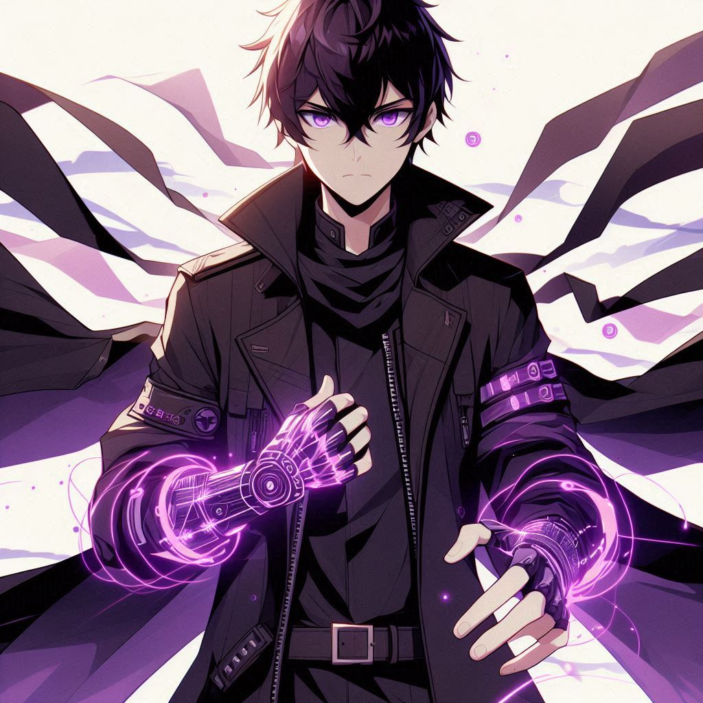

Shirodo Yukime Kamusa

Protagonista, seu nome é "Shirodo Yukime Kamusa", ele é um órfão de guerra e filho de uma deusa celestial, possui a habilidade "copia imperfeita" que lhe permite copiar a habilidade do oponente a partir do consumo de uma pequena quantidade de sangue do inimigo, e ao contrário de algumas habilidades semelhantes, sempre que ele aprende uma habilidade nova, ele armazena com as outras e nunca as perde e vai só acumulando poder.
Ashura Fuyugami
É um espadachim seguido pelo próprio trauma de ver quem ele amava morrer carbonizada em seus braços. Ele tem a habilidade "manipulação do gelo" e uma katana. Sua busca consiste em descobrir quem foi o responsável pelo incêndio e vingar sua amada. Nesse caminho, ele acaba se juntando com kitsume e se tornam companheiros.
Auron Legrand
Um semideus em busca de ser o guerreiro mais forte, possui a habilidade "evolução por indução" que consiste em copiar o status físico do oponente durante a batalha, mas não muda a aparência física. Ele é o melhor amigo do protagonista, quem tentar enfrentar o protagonista tem que derrotá-lo primeiro.
Rakku Kitisume Kazegane
Um meio humano, meio raposa, carregando o fardo de ser o receptáculo de uma entidade de destruição fragmentada em seu interior. Ele possui a habilidade "Manipulador de Sangue", porém quanto mais a entidade se recupera, mais forte o portador fica e novas habilidades aparecem. Ele se junta a Kieram por se sentir solitário após ter matado todos os habitantes de seu vilarejo, incluindo seus pais e irmãos.
Vellatrix Flamelis
Ela é uma bruxa demônio com poder tão absurdo que foi sentenciada a carregar a maldição da juventude que limita seu poder e seu corpo a um estado jovem como o de uma criança. Ela vem do clã de descendência mais forte entre os demônios e dedicou-se a ser uma bruxa forte, mas seu alto poder mágico a tornou a bruxa mais poderosa. Então, ela foi amaldiçoada e condenada ao exílio. Porém, ela encontra shirodo que a salva sem saber sua história, e decide acompanhá-lo e ajudá-lo em sua jornada.
Bastidores
Bom, para começar, esses são meus melhores amigos e sócios de negócios. Seus nomes são: Eleonam (prefere ser chamado de Breno), Kelvin (costuma ser direto) e Lucas (tenho como melhor fonte). Eu não teria chegado até esse resultado sem eles, pois tenho problemas com criatividade há alguns anos, e para fazer esse meu sonho seguir andando montamos uma dinâmica: Em geral eu comando o projeto, pois fui o que criou, mas também sou responsável por visar a história e visual de cada personagem e do roteiro em geral. O Breno comanda o design, pois ele é melhor em dar um padrão de detalhes e tornar os personagens únicos e na mesma linha de desenho, e ele também cuida do roteiro, já que entre nós é o melhor em desenvolver histórias. O Kelvin é quem nós recorremos quando não encontramos soluções para determinados furos no roteiro, e ele questiona também certas partes da história quando vê falta de coerência ou interrupção. Já o Lucas, é meu auto conselheiro, ele é quem já assistiu mais animes entre nós, e se eu preciso de alguma referência para complemento, ele está ali.Porem, para termos profundidade nos personagens, decidi que cada personalidade de personagem é baseado em um de nós ou em alguem que conhecemos, como: Shirodo (protagonista) é baseado na minha personalidade e nos meus valores, Ashura é baseado no breno, tem a forma de pensar, a tomada de decisão e valores dele, Auron (nome provisorio) é baseado no Lucas, pois é o melhor amigo do protagonista e tem os mesmo temperamento dele, ja o Kitisume é um personagem baseado na minha visão do Kelvin, que por ser mais quieto e calmo, eu percebo ele como um perigo camuflado, e ele é representado como um ser caotico, pois é minha visão do que se passa na mente dele, agora a Vellatrix é uma exceção, pois ela foi baseado no temperamento e na minha visão da minha prima, porem deixou de fazer parte então ainda fixo nas minhas lembranças passadas.Mesmo sendo baseados, não são exatamente iguais, e prefiro que seja assim, mas espero que no futuro isso dê certo, ainda estou discutindo o nome e os detalhes, mas assim que avançar, irei atualizar essa página.